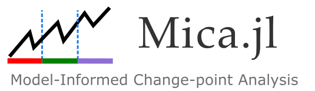

Mica.jl – Model-Based Changepoint Analysis

Welcome to the documentation for Mica.jl.
Mica.jl provides a robust and model-driven approach to changepoint detection in time series data.
What is Mica.jl?
Mica.jl provides a model-driven alternative to conventional changepoint detection methods. While most existing tools rely on detecting shifts in statistical properties (like the mean or variance), Mica instead detects changes in system dynamics as reflected in model parameters.
This makes Mica well-suited for:
- Epidemiological modeling
- Engineering systems (e.g., thermal dynamics)
- Economic and ecological simulations
- Any domain where a generative model describes the system's behavior
Key Features
- Model-Aware Detection: Integrates system models directly into the changepoint detection algorithm.
- Supports Multiple Model Types: (you can see more detaild explaination in Supported Problem Types page)
- ODEs (Ordinary Differential Equations)
- Difference equations
- Regression-based models
- Evolutionary Optimization: Uses genetic algorithms (via
Evolutionary.jl) to estimate changepoints and parameters. - Customizable: Supply your own model, loss function, or penalty criteria.
- Interpretable Outputs: Detects not just where change happens, but what model parameters change.
Installation
To install Mica.jl, use the Julia package manager:
julia> using Pkg
julia> Pkg.add("Mica")Citation
If you use Mica.jl in your research or applications, please cite the following paper:
Mehdi Lotfi, "Mica: Model-Informed Changepoint Analysis", [arXiv link or DOI].
Presentations
TSCPDetector: A Comprehensive Approach to Change Point Detection in Time Series Models Mehdi Lotfi, Lars Kaderali Presented at Statistical Computing 2024, Günzburg, Germany
Upcoming: Presentation of Mica.jl at the German Conference on Bioinformatics (GCB) 2025
Acknowledgments
Mica.jl is developed and maintained in the Kaderali Lab, Institute of Bioinformatics, University Medicine Greifswald.
Address: Institute of Bioinformatics University Medicine Greifswald Felix-Hausdorff-Str. 8 17475 Greifswald, Germany